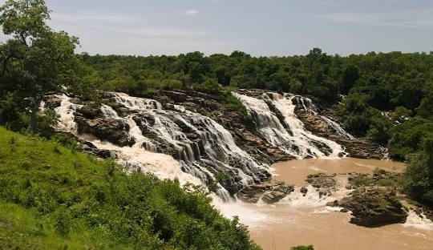
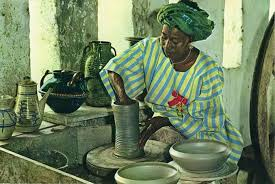
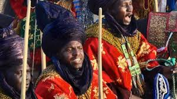

Niger State: Nigeria's Hidden Gem
Niger State, often overshadowed by its more populous counterparts, is a treasure trove of natural beauty, cultural richness, and historical significance.
This vast state, the largest in Nigeria, boasts a diverse landscape, from sprawling savannahs to lush forests, making it a haven for adventure seekers and nature enthusiasts.

A Tapestry of Natural Wonders
Gurara Waterfalls: This majestic cascade, with its thunderous roar and refreshing mist, is a must-visit for any nature lover. Surrounded by lush greenery, the falls offer a perfect escape from the city's hustle and bustle.
Kainji National Park: A wildlife enthusiast's paradise, Kainji National Park is home to a diverse array of animals, including elephants, hippos, and various bird species. The park also features the stunning Kainji Lake, ideal for boating, fishing, and birdwatching.
Shiroro Dam: This massive hydroelectric dam is not only a marvel of engineering but also a scenic spot. Visitors can enjoy boat rides, fishing, and picnics amidst the serene surroundings.


A Cultural Melting Pot
Niger State is a mosaic of cultures, with the Nupe people being the dominant ethnic group. Visitors can immerse themselves in the rich cultural heritage through:
Ladi Kwali Pottery Centre: This renowned center showcases the artistry of the Nupe people, particularly their pottery skills. Visitors can learn about the traditional pottery-making process and purchase unique pieces as souvenirs.
Traditional Festivals: Niger State is home to vibrant festivals that celebrate the region's cultural heritage. These events offer a glimpse into the local way of life and provide opportunities to experience traditional music, dance, and cuisine.



Adventure and Exploration
For those seeking adventure, Niger State has plenty to offer:
Hiking and Trekking: The state's diverse terrain provides ample opportunities for hiking and trekking. Explore the rugged beauty of the hills or embark on a guided safari in the national park.
:Fishing: The numerous rivers and lakes in Niger State make it a fisherman's paradise. Whether you're an experienced angler or a beginner, you're sure to have a rewarding experience.
Niger State is a destination that promises to captivate and inspire. With its stunning natural beauty, rich cultural heritage, and endless opportunities for adventure, it is a hidden gem waiting to be discovered.

SULEJA: A Gateway to Niger State
Suleja, strategically located at the border of Niger and FCT Abuja, serves as a bustling commercial hub and a gateway to the larger Niger State. Its proximity to the nation's capital has fueled its growth and development.

Commercial Center: Suleja is a major commercial center, offering a variety of goods and services. Its markets are renowned for their diversity and affordability.
Educational Hub: The town boasts several educational institutions, making it a preferred destination for students from neighboring states.
Religious Tourism: Suleja is home to several religious sites, attracting pilgrims and worshippers from far and wide.
KONTAGORA: The Heart of Pottery and Leather
Kontagora, nestled in the heart of Niger State, is renowned for its rich cultural heritage and traditional crafts.

Pottery Center: The town is famous for its pottery, with local artisans producing exquisite pieces using traditional techniques. Visitors can purchase unique pottery items as souvenirs.
Leather Works: Kontagora is also known for its leather works, with skilled craftsmen creating high-quality leather products.
Cultural Heritage: Immerse yourself in the local culture by attending traditional festivals and ceremonies.
BIDA: A Historical Gem

Historical Significance: Explore the remnants of the Nupe Kingdom, including ancient palaces and fortifications.
Cultural Heritage: Discover the rich cultural heritage of the Nupe people through their music, dance, and traditional attire.
Medical Tourism: Bida is home to the Federal Medical Centre, a major healthcare facility serving the region.
SHIRORO DAM: A Majestic Water Body
Niger State boasts the impressive Shiroro Dam, a significant hydroelectric power plant and a popular tourist destination.
Water Sports: The vast reservoir created by the dam offers opportunities for various water sports, including boating, fishing, and swimming.
Picnicking and Relaxation: The serene environment is perfect for picnics, relaxation, and enjoying the beautiful scenery.
Wildlife: The surrounding area is home to diverse wildlife, making it a potential spot for birdwatching and nature enthusiasts.ion.
ZUMA ROCK EQUIVALENT: Hilly Landscapes
While Niger State might not have a monolithic rock formation like Zuma Rock in Abuja, it does offer stunning hilly landscapes and rock formations.

Hill Trekking: Many parts of the state feature rolling hills, perfect for hiking and trekking.
Picnic Spots: These hills often provide excellent vantage points for picnics and enjoying panoramic views.
GURARA WATERFALLS: A Cascade of Beauty
Located in Gurara Local Government Area, the Gurara Waterfalls is a breathtaking spectacle. With a height of about 30 meters, the falls create a majestic scene as water plunges into a serene pool below. Surrounded by lush greenery, the area offers a refreshing escape from the city's hustle and bustle. Visitors can enjoy swimming in the natural pools, hiking through the surrounding trails, or simply relishing the beauty of the falls.
KAINJI NATIONAL PARK: A Wildlife Haven
For those seeking an adventure into the heart of nature, Kainji National Park is a must-visit. This vast park is home to a rich diversity of wildlife, including elephants, hippos, crocodiles, and numerous bird species. Visitors can embark on thrilling game drives, boat safaris on Kainji Lake, or explore the park on foot. The park also offers opportunities for fishing, camping, and picnicking, making it a perfect destination for families and adventure seekers alike.

RIVER NIGER: A Majestic Waterway
The mighty River Niger flows through Niger State, offering a captivating experience for water lovers. Along its banks, visitors can enjoy boat rides, fishing, and swimming. The river's serene beauty provides a tranquil escape from the city, while also offering opportunities for water sports and relaxation. Fishing enthusiasts can try their luck at catching various fish species that inhabit the river.